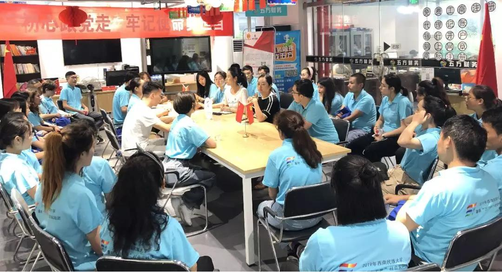
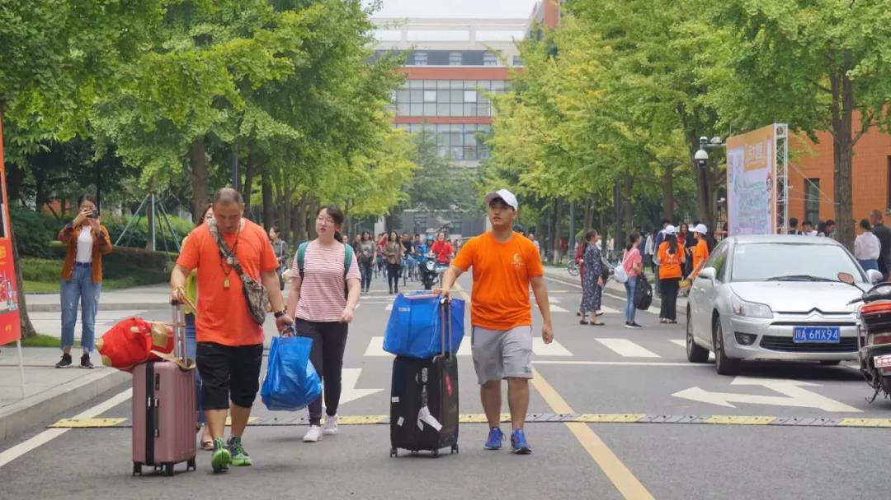
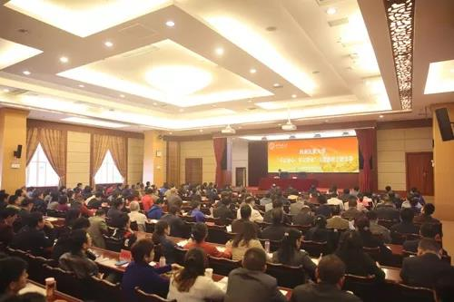

运营活动
运营活动  志愿活动
志愿活动  教育活动
教育活动  党建活动
党建活动  体育活动
体育活动 运营活动

走进“三区三州”的播种机、宣传队、助推器
沐浴新时代春风、培养爱国之情、砥砺强国之志、实践报国之行，由四川省民宗委、四川省委宣传部、四川省文明办、四川省教育厅、共青团四川省委主办，西南民族大学承办的“三区三州”在蓉青年同心营7月7日-7月12日在成都举行。作为大学生民汉双语志愿服务团的重点项目同心营通过理论学习、研讨交流、社会实践、暑期调研的创新模式为各族青年成长成才搭建舞台，为“三区三州”精准扶贫储备人才。活动邀请专家学者围绕习近平新时代中国特色社会主义思想、铸牢中华民族共同体意识、中华传统文化、青年发展等内容作专题报告。

新学期，民大重点做好这“四件大事”！
民大下半年工作的重点已划好！8月29日上午，我校召开2019年下半年工作部署会议。会上总结了我校上半年各项工作取得的成果，并对下半年的工作任务进行部署。上半年取得的阶段性成果为我们继续奋进奠定了坚实基础 回顾一下，新学期再出发！爬坡上坎、负重前行民大以优异的成绩向中华人民共和国成立70周年献礼！

校党委书记杨敏讲主题教育专题党课
10月25日上午，校党委书记杨敏以“以奋斗者的姿态续写初心使命新的辉煌”为题，在武侯校区讲“不忘初心、牢记使命”主题教育专题党课。
国家民委直属高校“不忘初心、牢记使命”主题教育领导小组第二指导组组长赵德安，副组长王扎西，联络员丁剑、葛佩雯以及全体在校校领导出席。全校处级党员干部、具有正高级专业技术职务的党员教师、学生党员代表聆听了党课。报告会由校党委副书记、校长刘玉彬主持。刘玉彬在报告会总结讲话中指出，杨敏书记的党课对党的“初心”和“使命”进行了深入解读，让我们深受启迪。